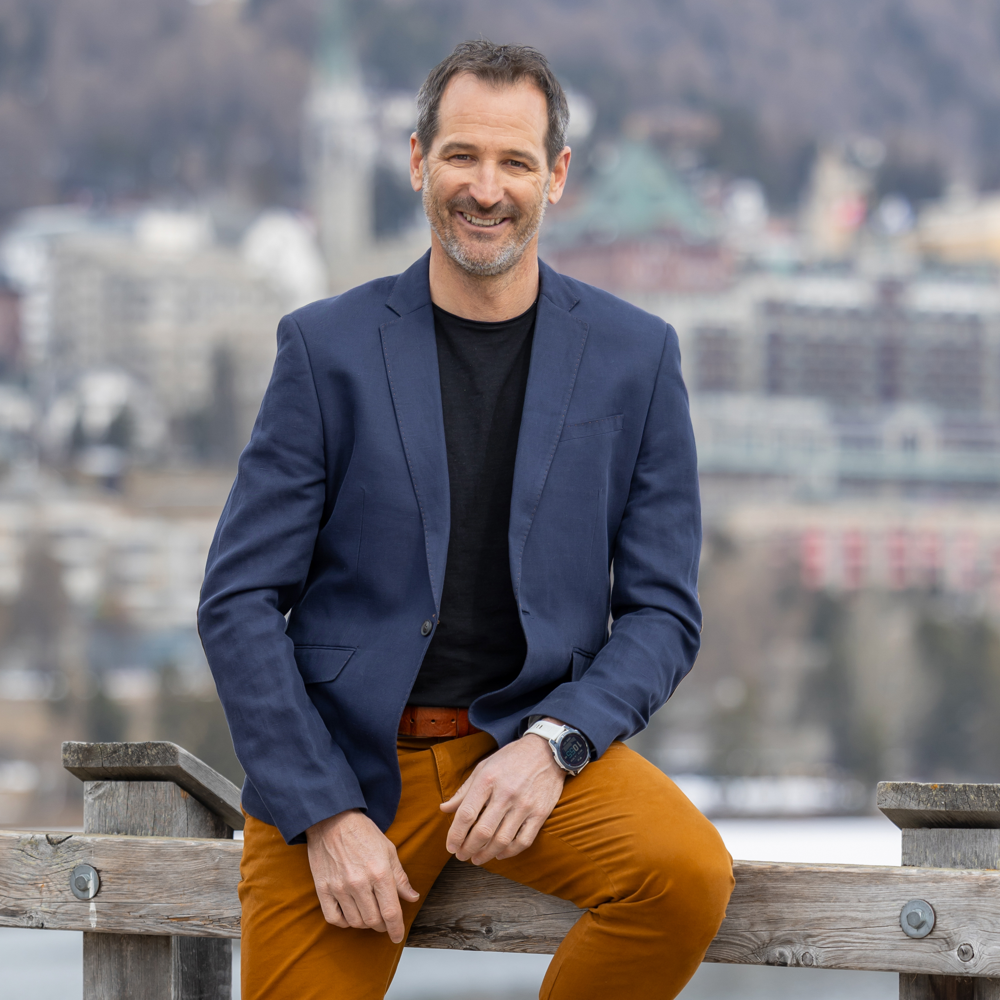
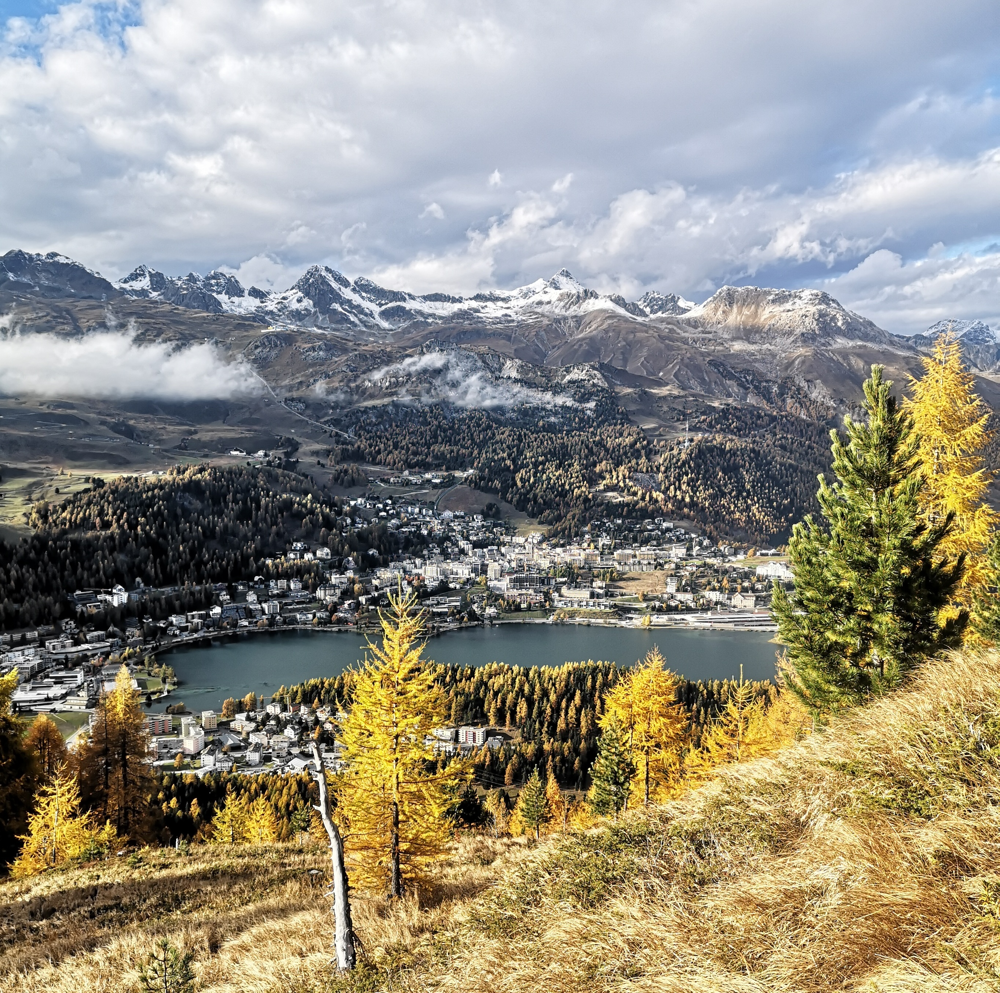

Bündner. Teamplayer. Macher. Enabler.
Inavaunt San Murezzan!
persuna
wurde im Oberengadin ausgebildet. Und die gibt etwas her. Bis zum dritten Lebensjahr war das Oberengadin unser Wohnort – eine Urverbindung, die tief verwurzelt und zeitlebens in mir verankert bleiben wird.
als Lebenselixier. Die Natur in unserer traumhaften Berglandschaft als Inspiration seit dem ersten Atemzug. Der Schnee als Grundelement – nach der Schneeschmelze erwachen andere Geister und die Bündner Jagd als grosse Leidenschaft. Die grundsolide bündnerische Erziehung vermittelte mir Werte, mit denen ich die Berge um uns herum immer wieder von Neuem zu versetzen versuche.
für's Leben bescherten mir zwischen dem 10. und 18. Lebensjahr die Sommer als Knecht beim Bergbauer. Inspirierend ging es weiter; Ausbildung zum Primarlehrer, zwei Hochschulabschlüsse und ein EMBA als Nachdiplomstudium. Angewendet im Beruf und in unzähligen nebenamtlichen Engagements. Dies alles hat mich zu dem gemacht, was ich bin: ein vielseitig versierter Macher und Brückenbauer.
zum Primarlehrer schenkte mir Vielseitigkeit. Die musischen Fächer haben es mir dabei besonders angetan. Anschliessend spielte ich Theater auf verschiedenen Bühnen, auch als Laienschauspieler in den Anfängen von Giovanni Netzers Origen. In den letzten 13 Jahren folgte die Inszenierung von vier grossen Theaterprojekten mit den Talentschüler:innen – von der Idee über das Drehbuch bis zur Regie und Umsetzung.
Oberhalbsteinerin, der Vater Puschlaver. Seit 13 Jahren lebe ich nun in der goldenen Mitte, im wunderbaren Oberengadin. Die Vielsprachigkeit wurde mir in die Wiege gelegt. Neben der Beherrschung von vier wichtigen Weltsprachen tanzt meine Zunge in 3 verschiedenen romanischen Idiomen – und dies mit Stolz.
in Mittelbünden – in den Wanderjahren habe ich dann die ganze Peripherie abgeschritten. Von der Surselva über Davos ins Unterengadin, und schlussendlich ans Licht an die Via Giovanni Segantini in St. Moritz. Den atemberaubenden Kanton kenne ich wie meine Westentasche und wünsche mir hier altern zu dürfen.
zum Schluss. Täglich lehrt mich die Familie Neues. Neugier und Wissensdurst werden durch sie genährt. Tugenden, die auch im Amt als Gemeindepräsident unabdingbar sind. Und eines ist für mich klar; das Amt ist nur zu stemmen mit grosser Unterstützung meiner Familie, auf welche ich mich glücklicherweise verlassen darf!
Mia motivaziun

Vor über einem Monat habe ich die Katze aus dem Sack gelassen. Entschlossen und schon vor dem Verzicht des amtierenden Amtsträgers. Lange war ich allein auf weiter Flur, nun glücklicherweise nicht mehr – ich liebe die Herausforderung und St. Moritz hat eine Auswahl verdient. Nach 13 wunderbaren Jahren im Oberengadin ist es für mich Zeit, ein neues Kapitel aufzuschlagen. In meinen 32 Berufsjahren als Ausbildner, Coach, Non Profit Organisation Vorsitzender, Geschäftsleitungsmitglied und Eventmaster durfte ich reichlich Erfahrung sammeln. Zudem haben die 18 Jahre journalistische Erfahrung beim Schweizer Fernsehen mein Horizont erweitert und mich auf der Bühne sattelfest gemacht. Durch meine breit gefächerten Engagements habe ich mich zeitlebens leidenschaftlich für die Gemeinschaft eingesetzt. Ich bin motiviert, dies auch bis zum Ruhestand und allenfalls darüber hinaus zu tun. Rein rechnerisch und gemäss aktuellem Stand noch mindestens weitere 12 Jahre. Die gute Vernetzung im Tal, welche ich in den vergangenen Jahren mit vielschichtigen Tätigkeiten und Funktionen knüpfen konnte, gibt mir die Gewissheit, dass ich reif bin für die Herausforderung.
Mit voller Kraft und Energie möchte ich mich als Gemeindepräsident für das St. Moritz und für das Oberengadin der Zukunft einsetzen."— Adriano Iseppi

temas da focus
St. Moritz hat einen guten Drive. Angestossene Projekte müssen jetzt umgesetzt und finanziert werden. Weiteres sollen folgen. St. Moritz ist gefordert, um als Wohn- und Lebensort für die einheimische Bevölkerung und für die Gäste noch attraktiver zu werden. Mit Leadership, Leidenschaft und Teamwork stehe ich engagiert dafür ein!
Das kommunale räumliche Leitbild gibt den möglichen Wirkungsbereich der Gemeinde vor. Darauf basierend muss in den nächsten Jahren nun zuerst die Gesamtrevision der Ortsplanung in trockene Tücher gebracht werden. Nicht mehr, aber vor allem auch nicht weniger. Die Möglichkeiten im klar abgesteckten Bereich müssen ausgeschöpft werden. Für einen prosperierenden Tourismus und einen starken Wirtschaftsstandort.
Mit dem Projekt St. Moritz 2030 hat bereits die vorletzte „Generation" von Legislative und Exekutive mit Mitwirkung von Bevölkerung und Gästen die Stossrichtung definiert. Primär gilt es nun die dort festgelegten Ziele mit Akribie weiterzuverfolgen. Es wurde einiges angestossen, bestimmte Aufgaben und Visionen aus dem Strategiepapier werden aber noch nicht abschliessend umgesetzt. Andere liegen noch völlig brach. Es gibt noch sehr viel zu tun.
Sehr grosse Investitionen stehen an. Es gilt nun, die Projekte mit Umsicht zu realisieren. Mit Weitsicht, um auch nächste Projekte zu ermöglichen. Um all diese grossen Kisten finanzieren zu können, ist St. Moritz in den nächsten Jahren sehr gefordert. Luftschlösser sollen andere bauen. St. Moritz hat gute Voraussetzungen und darf sich mit viel Selbstbewusstsein an die Umsetzung machen.
St. Moritz ist gut aufgestellt. Eine effiziente Gemeindeverwaltung bildet das Fundament für die weitere, erfolgreiche Entwicklung. Die operative Organisationsstruktur soll weiter optimiert werden. Mit meiner verbindenden Art setze ich mich im Team dafür ein.
And last, but not least: In den wichtigen, regionalen Themen muss St. Moritz Verantwortung übernehmen und die Zusammenarbeit fördern!
Einblick
Interview-Video hier einfügen
MP4 · oder YouTube / Vimeo iframe